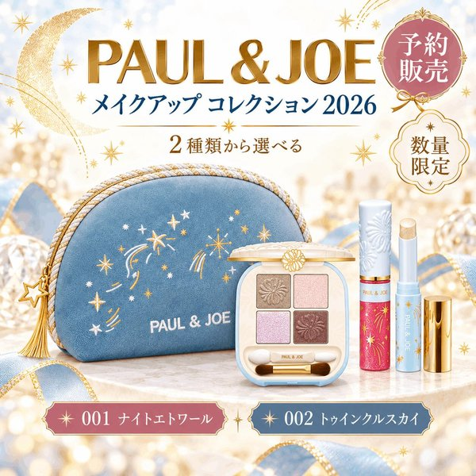
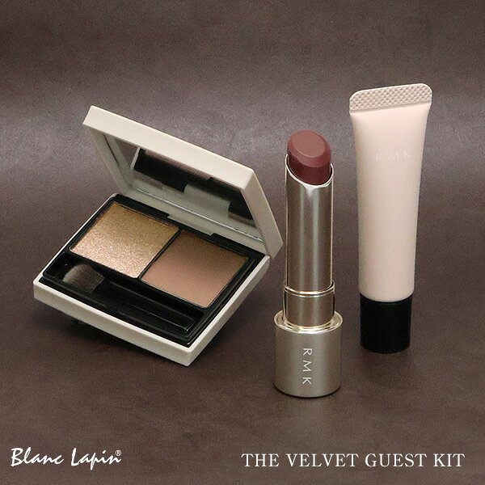
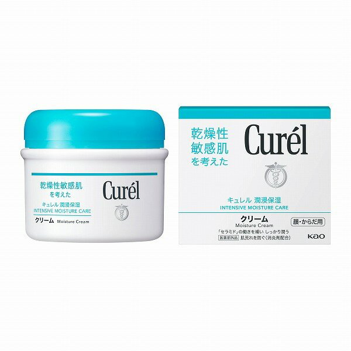
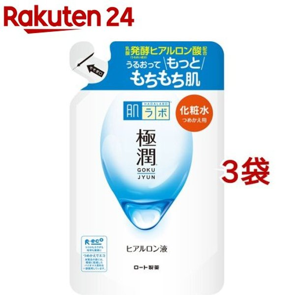
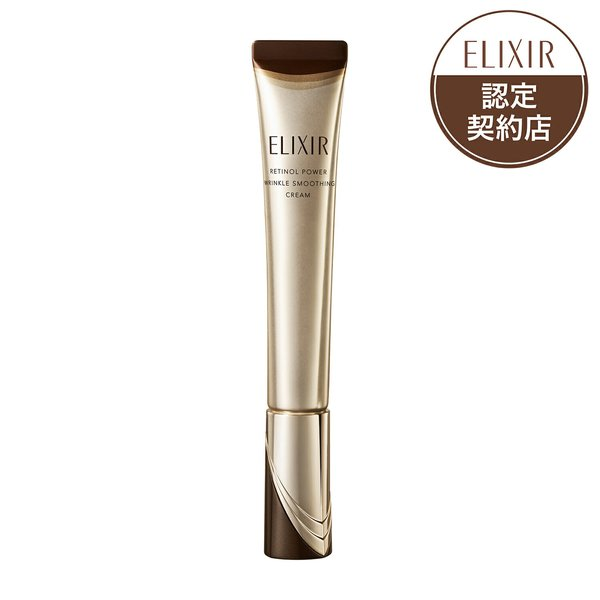
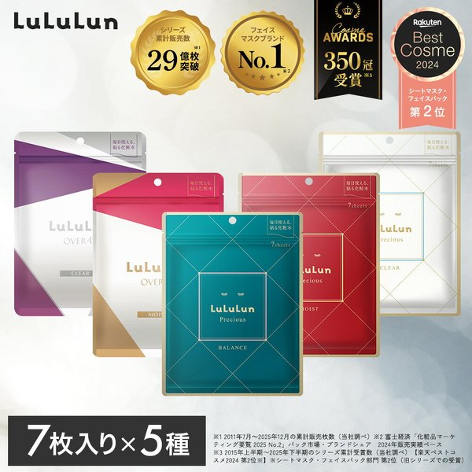
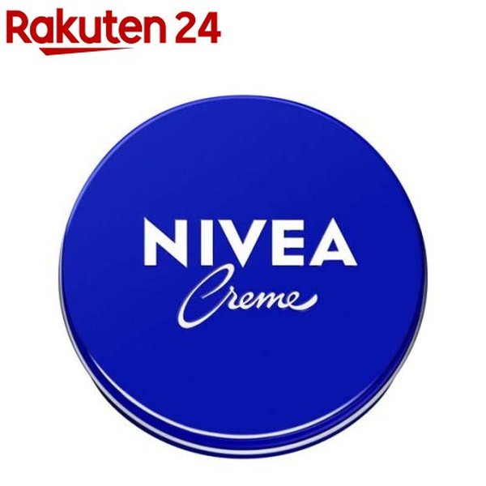
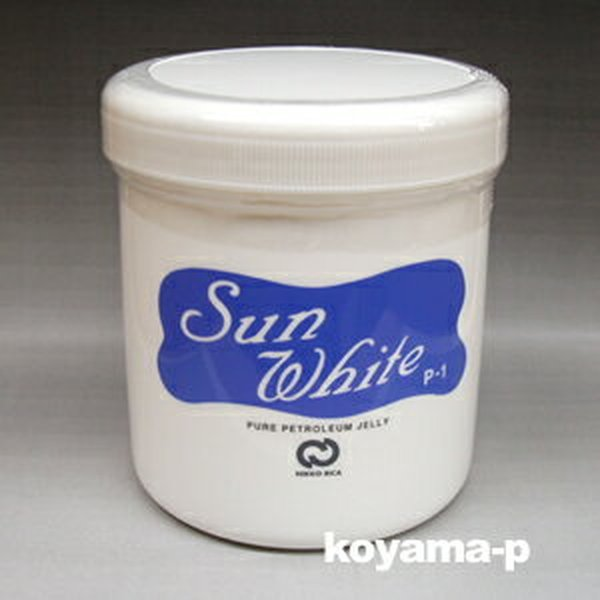
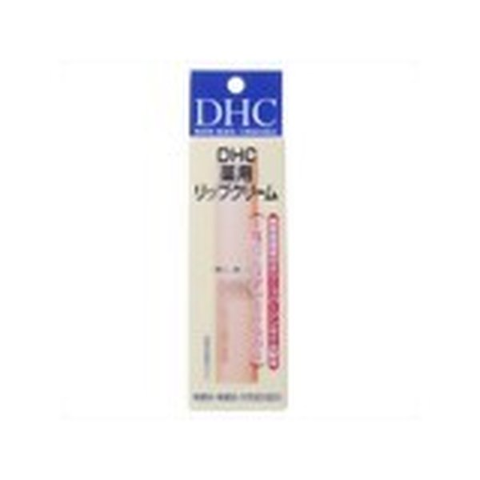

【2026年最新】クリスマスコフレ＆冬の保湿スキンケア10選｜ご褒美コスメと乾燥対策
冬の肌は、暖房と乾燥でいちばん疲れます。化粧のりが悪い、夕方には小じわが目立つ。それは肌の水分が足りていないサインです。だから冬は、新しいコスメを足すより先に、保湿の土台を整えるほうが結果につながります。
クリスマスコフレは、この時期しか買えない限定セット。定価より安く、ポーチやミニサイズが付くので、普段は手が出にくいブランドを試す機会になります。保湿は、化粧水・クリーム・マスクの3つを押さえれば、乾燥の大部分は防げます。
本記事では、楽天市場で人気・高評価のクリスマスコフレ＆冬の保湿スキンケア10選を、実売価格とレビュー評価つきで写真付き紹介します。
- おすすめ10選 スペック・特徴比較表
- BEST 1｜ホリデーコレクション2026「ドロージープリンセス」
- BEST 2｜メイクアップコレクション2026（001／002）
- BEST 3｜ザ ベルベット ゲスト キット
- BEST 4｜キュレル クリーム（保湿クリーム）
- BEST 5｜極潤ヒアルロン液 つめかえ用（170ml×3袋）
- BEST 6｜シュペリエル レチノパワー リンクルクリーム
- BEST 7｜プレシャスセット＋OVER45 シートマスク35枚
- BEST 8｜ニベアクリーム 青缶 大缶（169g）
- BEST 9｜サンホワイトP-1 白色ワセリン（400g）
- BEST 10｜薬用リップクリーム 3個セット
- 【読者負担0円】買わなくても得する無料サービス
- まとめ：クリスマスコフレ・保湿コスメ10選の選び方
| 順位 | 商品名 | ブランド | 最大の特徴・おすすめ理由 | 総合評価 |
|---|---|---|---|---|
| BEST 1 | ホリデーコレクション2026「ドロージープリンセス」 | ジルスチュアート（JILL STUART） | この時期だけの限定コフレ | 5.00 |
| BEST 2 | メイクアップコレクション2026（001／002） | ポール＆ジョー（PAUL & JOE） | アイシャドウ・リップ・ハイライターのセット | 4.00 |
| BEST 3 | ザ ベルベット ゲスト キット | RMK | 8,000円台で買えるデパコスコフレ | 4.00 |
| BEST 4 | キュレル クリーム（保湿クリーム） | キュレル（花王） | 顔にも体にも使える | 4.64 |
| BEST 5 | 極潤ヒアルロン液 つめかえ用（170ml×3袋） | 肌ラボ（ロート製薬） | 5種のヒアルロン酸配合 | 4.75 |
| BEST 6 | シュペリエル レチノパワー リンクルクリーム | エリクシール（資生堂） | レチノール配合の医薬部外品 | 4.70 |
| BEST 7 | プレシャスセット＋OVER45 シートマスク35枚 | ルルルン | 35枚入りで毎日使える | 4.76 |
| BEST 8 | ニベアクリーム 青缶 大缶（169g） | ニベア（NIVEA） | 700円台の価格 | 4.59 |
| BEST 9 | サンホワイトP-1 白色ワセリン（400g） | サンホワイト | 添加物が少ないシンプルな基剤 | 4.78 |
| BEST 10 | 薬用リップクリーム 3個セット | DHC | 3個セットで置き場所ごとに使える | 5.00 |
ホリデーコレクション2026「ドロージープリンセス」

ジルスチュアートの2026年ホリデーコレクション。アイシャドウやリップをまとめた限定セットで、パッケージも含めて飾っておきたくなるデザインです。毎年この時期にしか買えないので、クリスマスプレゼントにも選ばれています。楽天市場での実売価格は約10,880円（2026年11月時点）。
- この時期だけの限定コフレ
- パッケージまで華やか
- ギフトにも使える化粧箱
- 数量限定で色がなくなりやすい
メイクアップコレクション2026（001／002）

ポール＆ジョーの2026年メイクアップコレクション。アイシャドウ・リップ・ハイライターにポーチが付いた限定セットで、001と002の2種類から選べます。猫のモチーフが入ったパッケージで、持っているだけで気分が上がるコフレです。楽天市場での実売価格は約11,200円（2026年11月時点）。
- アイシャドウ・リップ・ハイライターのセット
- ポーチ付き
- 2種類から選べる
- レビューがまだ少なく色味は実物確認が確実
ザ ベルベット ゲスト キット

RMKのコフレ「ザ ベルベット ゲスト キット」。アイシャドウとリップ、チークをまとめた限定セットで、配色はベージュ寄りで合わせやすいのが特長です。8,000円台で買えるので、デパコスのコフレを初めて試す人にも手が届きます。楽天市場での実売価格は約8,470円（2026年11月時点）。
- 8,000円台で買えるデパコスコフレ
- ベージュ系で普段使いしやすい
- ポーチ付き
- 限定品のため在庫が薄い
キュレル クリーム（保湿クリーム）

セラミド機能成分と消炎剤を配合した花王のキュレル クリーム。乾燥で肌がかさつく時期に、顔にも体にも使えます。低刺激設計で、化粧水のあとに薄く伸ばすだけで保湿の仕上げができるので、冬の定番としてストックしやすい一品です。楽天市場での実売価格は約1,650円（2026年11月時点）。
- 顔にも体にも使える
- 低刺激設計で家族で使える
- 1,600円台で続けやすい
- べたつきが気になる人は薄く伸ばす
極潤ヒアルロン液 つめかえ用（170ml×3袋）

5種類のヒアルロン酸を配合した肌ラボの化粧水「極潤」。とろみのある液が肌に留まり、乾燥する季節の保湿に向いています。詰め替え3袋セットなので、毎日惜しみなく使いたい人に向いています。楽天市場での実売価格は約2,343円（2026年11月時点）。
- 5種のヒアルロン酸配合
- 詰め替え3袋のセット
- 2,300円台でコスパがよい
- とろみが強いので好みが分かれる
シュペリエル レチノパワー リンクルクリーム

資生堂エリクシールのレチノール配合クリーム。目もとや口もとの小じわが気になる部分に塗り、ハリを保つケアに向いています。医薬部外品で、レフィルがあるので使い続けるほどコストを抑えられます。楽天市場での実売価格は約6,600円（2026年11月時点）。
- レチノール配合の医薬部外品
- 目もと・口もとに塗りやすい
- レフィルで継続しやすい
- 朝は日焼け止めとの併用が必要
プレシャスセット＋OVER45 シートマスク35枚

シートマスクのルルルンを35枚まとめて試せるセット。プレシャスシリーズ3種とOVER45シリーズ2種が入り、毎晩1枚ずつ使えます。乾燥が進む冬に、顔全体を手軽に保湿したい人に向いています。楽天市場での実売価格は約3,146円（2026年11月時点）。
- 35枚入りで毎日使える
- 5種類のマスクを試せる
- 1枚あたり90円ほど
- 枚数が多いので開封後は早めに使い切る
ニベアクリーム 青缶 大缶（169g）

青缶でおなじみのニベアクリーム大缶。顔にも体にも使える保湿クリームで、乾燥が気になる手やかかとのケアにも使えます。700円台で買えるので、冬の保湿をコストをかけずに済ませたいときの定番です。楽天市場での実売価格は約770円（2026年11月時点）。
- 700円台の価格
- 顔にも体にも使える
- どこでも買い足せる定番
- 香りがあるので顔には好みが分かれる
サンホワイトP-1 白色ワセリン（400g）

高品質の白色ワセリン「サンホワイトP-1」の400g。乾燥性敏感肌の保湿に使えるシンプルな基剤で、唇や指先、顔の一部にも塗れます。大容量なので、家族で使い回してもなかなかなくなりません。楽天市場での実売価格は約3,880円（2026年11月時点）。
- 添加物が少ないシンプルな基剤
- 400gの大容量
- 唇・手・顔に使える
- 油分が強いので塗りすぎると重い
薬用リップクリーム 3個セット

DHCの薬用リップクリームを3個まとめたセット。乾燥する季節に唇の荒れを防ぐ定番で、ポーチ・職場・枕元と場所ごとに置いておけます。1個あたり500円台なので、なくなりがちなリップをまとめて確保できます。楽天市場での実売価格は約1,733円（2026年11月時点）。
- 3個セットで置き場所ごとに使える
- 1個あたり500円台
- 薬用で荒れ対策に向く
- 無香料ではないので香りが好みで分かれる
この記事の商品を買う前に、まずは無料で得する選択肢をチェック。どれも登録・利用は0円で、無料期間中に解約すれば料金はかかりません。読みたい雑誌がある人、ポイントを貯めたい人、アンケートなら気軽という人、それぞれに合うものを選べます。
初回31日無料・無料期間中に解約すれば0円 → 楽天ポイントモール｜登録無料で毎日ポイ活
買い物なしでもポイントが貯まる無料サービス → 楽天インサイト｜アンケートに答えてポイント
登録無料・すきま時間のアンケートで貯まる → 楽天カード｜年会費永年無料
新規発行・年会費ずっと0円 →
4つのサービスの違いと使い分けは「出費0円で得する！買わずにポイントが貯まる無料サービス厳選4選」でまとめています。
💡 まとめ：クリスマスコフレ・保湿コスメ10選の選び方
冬の肌は、保湿の土台ができているかどうかで一日の調子が変わります。まず化粧水とクリームで水分を閉じ込め、乾燥が強い日はシートマスクを足す。そのうえで、年に一度のコフレを楽しみとして足すのが、無駄のない買い方です。コフレは数量限定なので、気になるものは色が揃っているうちに確認しておきましょう。
楽天市場では「5と0のつく日」や「お買い物マラソン」などのキャンペーンに合わせて購入すると、ポイント還元が最大化してお得に手に入ります。ぜひチェックしてみてくださいね。